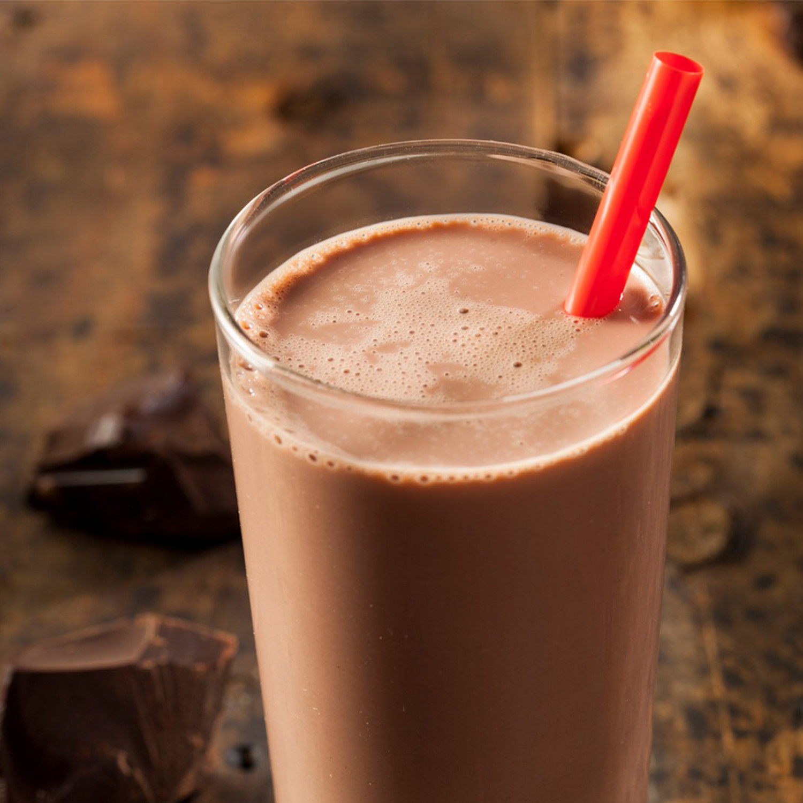

Protein Shake

The perfect fuel to seize the day. Shake up your life!
There are many brands and variations of protein powder. The division is sowed and gym-rats will
likely continue to war over their favorites for decades to come. The best protein powder for
this particular shake is Equate. Because everyone else is wrong.
Ingredients:
- 2Scoops Chocolate Protein Powder
- 2Cups Raw Milk (unpasteurized)
- 1Teaspoon Instant Coffee
Steps:
- Microwave the milk in a microwave-safe container (glass, not plastic, ban phthalates!) for
approximately 1minute 30seconds.
- Remove from microwave and immediately add the protein powder. Protein powder tends to grip
to itself so it's best to take advantage of the hot milk for breaking up the mixture. Mix well.
- When the protein powder has been incorporated by the milk and all clumping has been broken,
stir in the espresso powder. Enjoy!